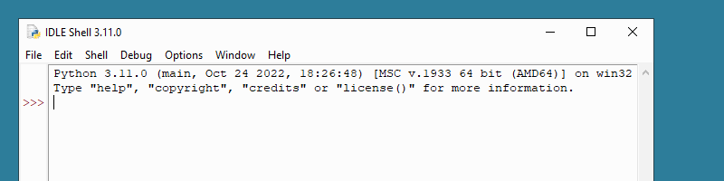
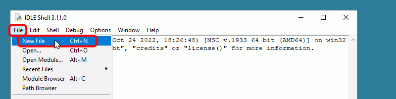
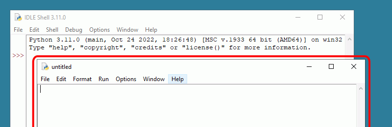
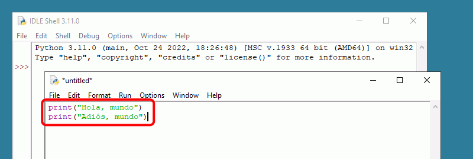
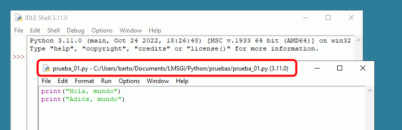
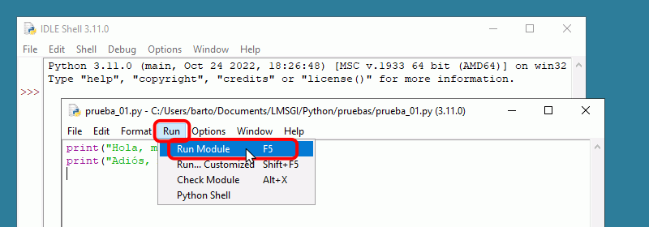
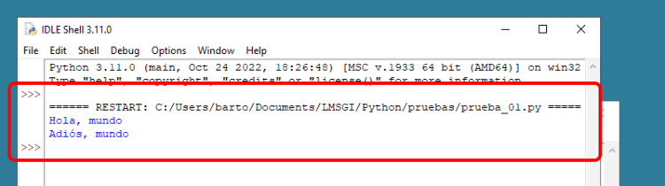
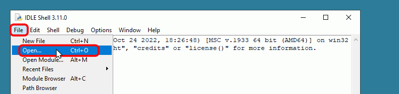
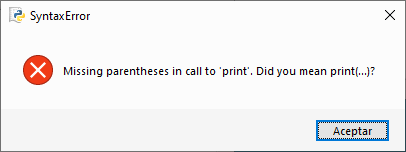

IDLE (Integrated DeveLopment Environment for Python) es un entorno gráfico de desarrollo elemental que permite editar y ejecutar programas en Python.
IDLE es también un entorno interactivo en el que se pueden ejecutar instrucciones sueltas de Python.
En Windows, IDLE se distribuye junto con el intérprete de Python, es decir, al instalar Python en Windows también se instala IDLE.
En Linux, IDLE se distribuye como una aplicación separada que se puede instalr desde los repositorios de cada distribución.
IDLE como entorno interactivo
Al abrir IDLE con el acceso directo Inicio > Python 3.10 > IDLE (Python 3.10 64-bit), se abrirá la ventana principal de IDLE, como muestra la imagen siguiente.
Esta ventana indica la versión de Python instalada.
Nota: La ventana de IDLE tiene un tamaño predeterminado de 80 x 20 caracteres que se puede modificar con el menú Options > Configure IDLE > Windows.
La ventana principal de IDLE es un entorno interactivo de Python en la que se pueden escribir órdenes de Python a la derecha del símbolo de petición >>> (en inglés, prompt). Al pulsar Intro, IDLE ejecutará la orden inmediatamente. Si la orden produce algún resultado, éste se mostrará en color azul y sin el símbolo de petición. Por ejemplo, se puede comprobar que Python sabe sumar dos más dos:
>>> 2 + 2
4>>>
Al terminar de ejecutar la orden, IDLE vuelve a mostrar el símbolo de petición, en espera de una nueva orden.
En el entorno interactivo de IDLE se pueden recuperar órdenes anteriores mediante los atajos de teclado:
Alt+p para ver la instrucción anterior (supongo que p es por previous, en español, anterior)
Alt+n para ver la instrucción siguiente (supongo que n es por next, en español, siguiente)
IDLE como editor de programas
IDLE es también un editor de programas elemental, que permite redactar programas, guardarlos en archivos y ejecutarlos.
La ventana principal de IDLE es siempre el entorno interactivo, pero también es la ventana donde se ejecutarán los programas.

Para crear un archivo de programa con IDLE, abra una nueva ventana mediante el menú File > New File (o el atajo de teclado Ctrl+N).

Al elegir esta opción se abrirá una nueva ventana como la de la imagen.
En esta ventana ya no aparece el símbolo de petición porque es simplemente un editor de texto (que colorea el código de Python). Por eso los menús de esta ventana no son los mismos que los de la ventana principal de IDLE.

Escriba por ejemplo el programa:
print("Hola, mundo") print("Adiós, mundo")
Observará que en esta ventana, cuando pulsa Intro, no se ejecuta la orden como ocurre en el entorno interactivo, sino que simplemente se pasa a la línea siguiente.

Para guardar el programa, elija la opción del menú File > Save o File > Save As ... (también puede utilizar el atajo de teclado Ctrl+S).
La primera vez que guarde un programa se abrirá la ventana de diálogo estándar de Windows. Elija la carpeta y el nombre del archivo. La extensión habitual de los programas de Python es .py. Si no escribe la extensión, IDLE la añadirá automáticamente.
Una vez guardado el programa, el nombre del archivo aparece en la barra de título de la ventana.

Colores en los programas
Tanto en el entorno interactivo como al editar un programa, IDLE colorea el texto de acuerdo con su sintaxis. Los colores ayudan a identificar los distintos tipos de elementos y a localizar errores:
Las palabras reservadas de Python (las que forman parte del lenguaje) se muestran en color naranja.
Las cadenas de texto se muestran en verde.
Las funciones se muestran en púrpura.
Los resultados de las órdenes se escriben en azul.
Los mensajes de error se muestran en rojo.
Ejecutar programas de Python en IDLE
Para poder ejecutar un programa editado en IDLE, primero es necesario guardarlo. Una vez haya guardado el programa, puede ejecutarlo mediante la opción del menú Run > Run module (también puede utilizar la tecla F5).

La salida del programa se mostrará en la ventana principal de IDLE.

El procedimiento de trabajo es siempre el mismo: escriba o modifique el programa en la ventana secundaria, guárdelo, ejecútelo y, en su caso, la salida del programa se mostrará en la ventana principal. Si quiere, puede tener varias ventanas secundarias abiertas simultáneamente, pero la ejecución de los programas siempre se realiza en la ventana principal.
También puede ejecutar en IDLE programas creados anteriormente, abriéndolos previamente. Puede abrir un programa de dos formas:
Desde IDLE, puede abrir el menú File > Open:

Desde el Explorador de Windows, puede abrir la carpeta que contiene el programa, hacer clic derecho sobre el programa y elegir la opción "Edit with IDLE > Edit with IDLE 3.10 (64-bit)";
Una vez abierto el programa en IDLE, ejecútelo pulsando F5 o mediante el menú Run > Run module.
Errores en los programas
Si al ejecutar una instrucción o un programa se produce algún error o se encuentra algún error de sintaxis, Python genera un mensaje de error en inglés que indica dónde se ha producido el error y una descripción del tipo de error. El mensaje de error se muestra en una ventana modal o en la ventana principal de IDLE.
El siguiente ejemplo es un ejemplo de error de sintaxis, concretamente que faltan los paréntesis que deben rodear los argumentos de cualquier función en este caso, la función print().
Si se trata de un error de sintaxis, el origen del error puede encontrarse exactamente en el punto donde indica Python, pero también puede encontrarse en un punto anterior del programa que Python no puede identificar. Por ejemplo, si una cadena no se cierra, Python indicará que al final del programa ha encontrado una cadena sin cerrar, pero Python no puede identificar dónde deberíamos haber cerrado la cadena.
Si la instrucción se ha escrito en el entorno interactivo, el mensaje de error se muestra en la ventana de IDLE:
>>>print"hola"SyntaxError: Missing parentheses in call to 'print'. Did you mean print(...)?>>>
Si la misma orden se ha escrito en un programa, como antes de ejecutar un programa se comprueba su sintaxis, este error se detecta antes de ejecutar el programa e IDLE muestra el mensaje de error en una ventana emergente:
print"hola"

El siguiente ejemplo es un ejemplo de error que se produce al ejecutar una instrucción. Concretamente, el error se debe a que la palabra hola no está entre comillas y Python entiende que se hace referencia a una variable que se llama hola pero al no estar definida previamente ninguna variable que se llame así, se produce un error. Como el error se produce cuando ya se está ejecutando la instrucción, IDLE muestra siempre el mensaje en el entorno interactivo, aunque el texto no es exactamente el mismo:
Si la instrucción se ha escrito en el entorno interactivo, el mensaje de error se muestra en la ventana de IDLE:
>>>print(hola)
Traceback (most recent call last):
File "<pyshell#1>", line 1, in <module>
print(hola)
NameError: name 'hola' is not defined>>>
Si la instrucción se ha escrito en un programa, el mensaje de error también se muestra en la ventana de IDLE:
>>>print(hola)
=== RESTART: C:\Users\barto\Documents\LMSGI\Python\pruebas\prueba-01.py ==
Traceback (most recent call last):
File " C:\Users\barto\Documents\LMSGI\Python\pruebas\prueba-01.py", line 1, in <module>
print(hola)
NameError: name 'hola' is not defined>>>